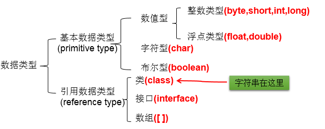

Java 之基本语法
整体语言概述

（一）Java 语言概述
1. 基础常识
软件：即一系列按照特定顺序组织的计算机数据和指令的集合。分为：系统软件 和 应用软件
系统软件：windows , mac os , linux ,unix,android,ios,....
应用软件：word ,ppt, 画图板,... 人机交互方式： 图形化界面 vs 命令行方式 应用程序 = 算法 + 数据结构
2. 计算机语言的发展迭代史
第一代：机器语言
第二代：汇编语言
第三代：高级语言
- 面向过程：C,Pascal、Fortran
- 面向对象：Java,JS,Python,Scala,...
3. Java 语言版本迭代概述
1991 年 Green 项目，开发语言最初命名为 Oak (橡树)
1994 年，开发组意识到 Oak 非常适合于互联网
1996 年，发布 JDK 1.0，约 8.3 万个网页应用 Java 技术来制作
1997 年，发布 JDK 1.1，JavaOne 会议召开，创当时全球同类会议规模之最
1998 年，发布 JDK 1.2，同年发布企业平台 J2EE
1999 年，Java 分成 J2SE、J2EE 和 J2ME，JSP/Servlet 技术诞生
2004 年，发布里程碑式版本：JDK 1.5，为突出此版本的重要性，更名为 JDK 5.0
2005 年，J2SE -> JavaSE，J2EE -> JavaEE，J2ME -> JavaME
2009 年，Oracle 公司收购 SUN，交易价格 74 亿美元
2011 年，发布 JDK 7.0
2014 年，发布 JDK 8.0，是继 JDK 5.0 以来变化最大的版本
2017 年，发布 JDK 9.0，最大限度实现模块化
2018 年 3 月，发布 JDK 10.0，版本号也称为 18.3
2018 年 9 月，发布 JDK 11.0，版本号也称为 18.9
3. Java 语言应用的领域：
- Java Web 开发：后台开发
- 大数据开发：
- Android 应用程序开发：客户端开发
4. Java 语言的特点
- 面向对象性：
- 两个要素：类、对象
- 三个特征：封装、继承、多态
- 健壮性：① 去除了 C 语言中的指针 ②自动的垃圾回收机制 --> 仍然会出现内存溢出、内存泄漏
- 跨平台型：write once,run anywhere: 一次编译，到处运行
- 功劳归功于：JVM

（二）开发环境搭建
1.1 JDK、JRE、JVM 的关系

1.2 JDK 的下载、安装
下载：官网，github
安装：傻瓜式安装：JDK 、JRE
注意问题：安装软件的路径中不能包含中文、空格。
1.3 path 环境变量的配置
1.3.1 为什么配置 path 环境变量？
path 环境变量：windows 操作系统执行命令时所要搜寻的路径
为什么要配置 path: 希望 java 的开发工具（javac.exe,java.exe) 在任何的文件路径下都可以执行成功。
1.3.2 如何配置？

（三）第一个 Java 程序
1. 开发体验——Hello World

1.1 编写:
//创建一个java源文件：HelloWorld.java
class HelloChina{
public static void main(String[] args){
System.out.println("Hello,World!");
}
}
1.2 编译：
javac HelloWorld.java
1.3 运行：
java HelloWord
2. 常见问题的解决


3. 总结第一个程序
-
java 程序编写 - 编译 - 运行的过程
-
编写：我们将编写的 java 代码保存在以 ".java" 结尾的源文件中
- 编译：使用 javac.exe 命令编译我们的 java 源文件。格式：javac 源文件名. java
-
运行：使用 java.exe 命令解释运行我们的字节码文件。 格式：java 类名
-
在一个 java 源文件中可以声明多个 class。但是，只能最多有一个类声明为 public 的。 而且要求声明为 public 的类的类名必须与源文件名相同。
- 程序的入口是 main() 方法。格式是固定的。
-
输出语句：
-
System.out.println(): 先输出数据，然后换行
-
System.out.print(): 只输出数据
-
每一行执行语句都以 ";" 结束。
- 编译的过程：编译以后，会生成一个或多个字节码文件。字节码文件的文件名与 java 源文件中的类名相同。
（四）注释与 API 文档
1. 注释: Comment
分类： 单行注释：// 多行注释：/ / 文档注释：/* /
作用：
① 对所写的程序进行解释说明，增强可读性。方便自己，方便别人
② 调试所写的代码
特点：
①单行注释和多行注释，注释了的内容不参与编译。 换句话说，编译以后生成的. class 结尾的字节码文件中不包含注释掉的信息
② 注释内容可以被 JDK 提供的工具 javadoc 所解析，生成一套以网页文件形式体现的该程序的说明文档。
③ 多行注释不可以嵌套使用
2. Java API 文档：
- API: application programming interface。习惯上：将语言提供的类库，都称为 API.
- API 文档：针对于提供的类库如何使用，给的一个说明书。类似于《新华字典》
3. 良好的编程风格
3.1 正确的注释和注释风格
- 使用文档注释来注释整个类或整个方法
- 如果注释方法中的某一个步骤，使用单行或多行注释。
3.2 正确的缩进和空白
- 使用一次 tab 操作，实现缩进
- 运算符两边习惯性各加一个空格。比如：2 + 4 * 5。
3.3 块的风格
行尾风格（Java API 源码选择的风格）
public class Test{
public static void main (String args){
System.out.print("Hello");
}
}
次行风格
public class Test
{
public static void main (String args)
{
System.out.print("Hello");
}
}
3.4 命名风格：
- 包名：多单词组成时所有字母都小写：xxxyyyzzz
- 类名、接口名：多单词组成时，所有单词的首字母大写： XxxYyyZzz(大驼峰式)
- 变量名、方法名：多单词组成时，第一个单词首字母小写，第二个单词开始每个单词首字母大写： xxxYyyZzz(小驼峰式)
- 常量名：所有字母都大写。多单词时每个单词用下划线连接： XXX_YYY_ZZZ
二、基本语法
（一）关键字与标识符
1. Java 关键字的使用
定义：被 Java 语言赋予了特殊含义，用做专门用途的字符串（单词） 特点：关键字中所字母都为小写 具体关键字：


2. 保留字：
现 Java 版本尚未使用，但以后版本可能会作为关键字使用。 具体哪些保留字：goto 、const 注意：自己命名标识符时要避免使用这些保留字
3. 标识符的使用
3.1 定义：
凡是自己可以起名字的地方都叫标识符。
3.2 涉及到的结构：
包名、类名、接口名、变量名、方法名、常量名
3.3 规则：
(必须要遵守。否则，编译不通过)
- 由 26 个英文字母大小写，0-9, _或 $ 组成。
- 数字不可以开头。
- 不可以使用关键字和保留字，但能包含关键字和保留字。
- Java 中严格区分大小写，长度无限制。
- 标识符不能包含空格。
3.4 规范：
（可以不遵守，不影响编译和运行。但是要求大家遵守）
- 包名：多单词组成时所有字母都小写：xxxyyyzzz
- 类名、接口名：多单词组成时，所有单词的首字母大写： XxxYyyZzz(小驼峰式)
- 变量名、方法名：多单词组成时，第一个单词首字母小写，第二个单词开始每个单词首字母大写： xxxYyyZzz(大驼峰式)
- 常量名：所有字母都大写。多单词时每个单词用下划线连接： XXX_YYY_ZZZ
注意点： 在起名字时，为了提高阅读性，要尽量意义，“见名知意”。
有意义的命名 1.介绍 软件中随处可见命名。我们给变量、函数、参数、类和包命名。我们给源代码及源代码所在目录命名。 这么多命名要做，不妨做好它。下文列出了取个好名字的几条简单规则。
2.名副其实,见名知意 变量名太随意，haha、list1、ok、theList 这些都没啥意义
3.避免误导 包含List、import、java等类名、关键字或特殊字； 字母o与数字0，字母l与数字1等 提防使用不同之处较小的名称。比如：XYZControllerForEfficientHandlingOfStrings与XYZControllerForEfficientStorageOfStrings
4.做有意义的区分 反面教材，变量名：a1、a2、a3 避免冗余，不要出现Variable、表字段中避免出现table、字符串避免出现nameString，直接name就行，知道是字符串类型 再比如：定义了两个类：Customer类和CustomerObject类，如何区分？ 定义了三个方法：getActiveAccount()、getActiveAccounts()、getActiveAccountInfo()，如何区分？
5.使用读得出来的名称 不要使用自己拼凑出来的单词，比如：xsxm(学生姓名)；genymdhms(生成日期，年、月、日、时、分、秒) 所谓的驼峰命名法，尽量使用完整的单词
6.使用可搜索的名称 一些常量，最好不直接使用数字，而指定一个变量名，这个变量名可以便于搜索到. 比如：找MAX_CLASSES_PER_STUDENT很容易，但想找数字7就麻烦了。
7.避免使用编码 7.1.匈牙利语标记法 即变量名表明该变量数据类型的小写字母开始。例如，szCmdLine的前缀sz表示“以零结束的字符串”。 7.2.成员前缀 避免使用前缀，但是Android中一个比较好的喜欢用m表示私有等，个人感觉比较好 7.3.接口和实现 作者不喜欢把接口使用I来开头，实现也希望只是在后面添加Imp
8.避免思维映射 比如传统上惯用单字母名称做循环计数器。所以就不要给一些非计数器的变量命名为：i、j、k等
9.类名 类名与对象名应该是名词与名词短语。如Customer、WikiPage、Account和AddressParser。避免使用Data或Info这样的类名。 不能使动词。比如：Manage、Process
10.方法名 方法名应当是动词或者动词短语。如postPayment、deletePage或save
11.别扮可爱 有的变量名叫haha、banana 别用eatMyShorts()表示abort()
12.每个概念对应一个词 项目中同时出现controllers与managers，为什么不统一使用其中一种？ 对于那些会用到你代码的程序员，一以贯之的命名法简直就是天降福音。
13.别用双关语 有时可能使用add并不合适，比例insert、append。add表示完整的新添加的含义。
14.使用解决方案领域名称 看代码的都是程序员，所以尽量用那些计算机科学术语、算法名、模式名、数学术语， 依据问题所涉领域来命名不算是聪明的做法。
15.使用源自所涉问题领域的名称 如果不能用程序员熟悉的术语来给手头的工作命名，就采用从所涉问题领域而来的名称吧。 至少，负责维护代码的程序员就能去请教领域专家了。
16.添加有意义的语境 可以把相关的变量放到一个类中，使用这个类来表明语境。
17.不要添加没用的语境 名字中带有项目的缩写，这样完全没有必要。比如有一个名为“加油站豪华版”（Gas Station Deluxe）的项目， 在其中给每个类添加GSD前缀就不是什么好策略。
18.最后的话 取好名字最难的地方在于需要良好的描述技巧和共有文化背景。
（二）变量的使用
1. 变量的分类
1.1 按数据类型分类

详细说明：
整型：byte(1 字节 = 8bit) \ short(2 字节) \ int(4 字节) \ long(8 字节)
① byte 范围：-128 ~ 127
② 声明 long 型变量，必须以 "l" 或 "L" 结尾
③ 通常，定义整型变量时，使用 int 型。
④ 整型的常量，默认类型是：int 型
浮点型：float(4 字节) \ double(8 字节)
① 浮点型，表示带小数点的数值
② float 表示数值的范围比 long 还大
③ 定义 float 类型变量时，变量要以 "f" 或 "F" 结尾
④ 通常，定义浮点型变量时，使用 double 型。
⑤ 浮点型的常量，默认类型为：double
字符型：char (1 字符 = 2 字节)
① 定义 char 型变量，通常使用一对'', 内部只能写一个字符
② 表示方式：1. 声明一个字符 2. 转义字符 3. 直接使用 Unicode 值来表示字符型常量
布尔型：boolean
① 只能取两个值之一：true 、 false
② 常常在条件判断、循环结构中使用
1.2 按照声明位置分类

2. 定义变量的格式：
- 数据类型 变量名 = 变量值;
- 数据类型 变量名;
- 变量名 = 变量值;
3. 变量使用的注意点：
① 变量必须先声明，后使用
② 变量都定义在其作用域内。在作用域内，它是有效的。换句话说，出了作用域，就失效了
③ 同一个作用域内，不可以声明两个同名的变量
4. 基本数据类型变量间运算规则
4.1 涉及到的基本数据类型：
除了 boolean 之外的其他 7 种
4.2 自动类型转换
(只涉及 7 种基本数据类型）
- 结论：当容量小的数据类型的变量与容量大的数据类型的变量做运算时，结果自动提升为容量大的数据类型。
- byte 、char 、short --> int --> long --> float --> double
- 特别的：当 byte、char、short 三种类型的变量做运算时，结果为 int 型
- 说明：此时的容量大小指的是，表示数的范围的大和小。比如：float 容量要大于 long 的容量
4.3 强制类型转换
(只涉及 7 种基本数据类型）：自动类型提升运算的逆运算。
- 需要使用强转符：()
- 注意点：强制类型转换，可能导致精度损失。
4.4 String 与 8 种基本数据类型间的运算
- String 属于引用数据类型, 翻译为：字符串
- 声明 String 类型变量时，使用一对 ""
- String 可以和 8 种基本数据类型变量做运算，且运算只能是连接运算：+
- 运算的结果仍然是 String 类型
注意：
String s = 123;//编译错误
String s1 = "123";
int i = (int)s1;//编译错误
（三）进制的转化
1. 编程中涉及的进制及表示方式：
- 二进制 (binary)： 0,1，满 2 进 1 以 0b 或 0B 开头。
- 十进制 (decimal)：0-9，满 10 进 1。
- 八进制 (octal)：0-7，满 8 进 1，以数字 0 开头表示。
- 十六进制 (hex)：0-9 及 A-F，满 16 进 1，以 0x 或 0X 开头表示。此处的 A-F 不区分大小写如：0x21AF+1=0X21B0
2. 二进制的使用说明：
2.1 计算机底层的存储方式：
所有数字在计算机底层都以二进制形式存在。
2.2 二进制数据的存储方式：
所有的数值，不管正负，底层都以补码的方式存储。
2.3 原码、反码、补码的说明：
- 正数：三码合一
- 负数：
- 负数的原码：直接将一个数值换成二进制数。最高位是符号位。
- 负数的反码：是对原码按位取反，只是最高位（符号位）确定为 1。
- 负数的补码：其反码加 1。
3. 进制之间的转化：
3.1 图示：

3.2 图示二进制转化为十进制：

-69 补码 --> 原码

127 原码 --> 补码

3.3 图示十进制转化为二进制：
3.4 二进制与八进制、十六进制之间的转化：


（四）运算符
1. 算术运算符
算术运算符： + - + - * / % (前)++ (后)++ (前)-- (后)-- +
【典型代码】
//除号：/
int num1 = 12;
int num2 = 5;
int result1 = num1 / num2;
System.out.println(result1);//2
// %:取余运算
//结果的符号与被模数的符号相同
//开发中，经常使用%来判断能否被除尽的情况。
int m1 = 12;
int n1 = 5;
System.out.println("m1 % n1 = " + m1 % n1);
int m2 = -12;
int n2 = 5;
System.out.println("m2 % n2 = " + m2 % n2);
int m3 = 12;
int n3 = -5;
System.out.println("m3 % n3 = " + m3 % n3);
int m4 = -12;
int n4 = -5;
System.out.println("m4 % n4 = " + m4 % n4);
//(前)++ :先自增1，后运算
//(后)++ :先运算，后自增1
int a1 = 10;
int b1 = ++a1;
System.out.println("a1 = " + a1 + ",b1 = " + b1);
int a2 = 10;
int b2 = a2++;
System.out.println("a2 = " + a2 + ",b2 = " + b2);
int a3 = 10;
++a3;//a3++;
int b3 = a3;
//(前)-- :先自减1，后运算
//(后)-- :先运算，后自减1
int a4 = 10;
int b4 = a4--;//int b4 = --a4;
System.out.println("a4 = " + a4 + ",b4 = " + b4);
【特别说明】
- (前)++ : 先自增 1，后运算 (后)++ : 先运算，后自增 1
- (前)-- : 先自减 1，后运算 (后)-- : 先运算，后自减 1
- 连接符：+：只能使用在 String 与其他数据类型变量之间使用。
2. 赋值运算符
赋值运算符：= += -= *= /= %=
【经典代码】
int i2,j2;
//连续赋值
i2 = j2 = 10;
//***************
int i3 = 10,j3 = 20;
int num1 = 10;
num1 += 2;//num1 = num1 + 2;
System.out.println(num1);//12
int num2 = 12;
num2 %= 5;//num2 = num2 % 5;
System.out.println(num2);
short s1 = 10;
//s1 = s1 + 2;//编译失败
s1 += 2;//结论：不会改变变量本身的数据类型
System.out.println(s1);
【特别说明】
- 运算的结果不会改变变量本身的数据类型
- 开发中，如果希望变量实现 + 2 的操作，有几种方法？(前提：int num = 10;) 方式一：num = num + 2; 方式二：num += 2; (推荐)
- 开发中，如果希望变量实现 + 1 的操作，有几种方法？(前提：int num = 10;) 方式一：num = num + 1; 方式二：num += 1; 方式三：num++; (推荐)
3. 比较运算符
比较运算符（关系运算符）: == != > < >= <= instanceof
【典型代码】
int i = 10;
int j = 20;
System.out.println(i == j);//false
System.out.println(i = j);//20
boolean b1 = true;
boolean b2 = false;
System.out.println(b2 == b1);//false
System.out.println(b2 = b1);//true
【特别说明】
-
比较运算符的结果是 boolean 类型
-
> < >= <= : 只能使用在数值类型的数据之间。
-
== 和 !=: 不仅可以使用在数值类型数据之间，还可以使用在其他引用类型变量之间。
java
Account acct1 = new Account(1000);
Account acct2 = new Account(1000);
boolean b1 = (acct1 == acct2);//比较两个Account是否是同一个账户。
boolean b2 = (acct1 != acct2);//
4. 逻辑运算符
逻辑运算符：& && | || ! ^
【典型代码】
//区分& 与 &&
//相同点1：& 与 && 的运算结果相同
//相同点2：当符号左边是true时，二者都会执行符号右边的运算
//不同点：当符号左边是false时，&继续执行符号右边的运算。&&不再执行符号右边的运算。
//开发中，推荐使用&&
boolean b1 = true;
b1 = false;
int num1 = 10;
if(b1 & (num1++ > 0)){
System.out.println("我现在在北京");
}else{
System.out.println("我现在在南京");
}
System.out.println("num1 = " + num1);
boolean b2 = true;
b2 = false;
int num2 = 10;
if(b2 && (num2++ > 0)){
System.out.println("我现在在北京");
}else{
System.out.println("我现在在南京");
}
System.out.println("num2 = " + num2);
注意：
- 区分：| 与 ||
- 相同点 1：| 与 || 的运算结果相同
- 相同点 2：当符号左边是 false 时，二者都会执行符号右边的运算
- 不同点 3：当符号左边是 true 时，| 继续执行符号右边的运算，而 || 不再执行符号右边的运算
- 开发中，推荐使用 ||
boolean b3 = false;
b3 = true;
int num3 = 10;
if(b3 | (num3++ > 0)){
System.out.println("我现在在北京");
}else{
System.out.println("我现在在南京");
}
System.out.println("num3 = " + num3);
boolean b4 = false;
b4 = true;
int num4 = 10;
if(b4 || (num4++ > 0)){
System.out.println("我现在在北京");
}else{
System.out.println("我现在在南京");
}
System.out.println("num4 = " + num4);
【特别说明的】
逻辑运算符操作的都是 boolean 类型的变量。而且结果也是 boolean 类型
5. 位运算符
位运算符：<<>> >>> & | ^ ~
【典型代码】
int i = 21;
i = -21;
System.out.println("i << 2 :" + (i << 2));
System.out.println("i << 3 :" + (i << 3));
System.out.println("i << 27 :" + (i << 27));
int m = 12;
int n = 5;
System.out.println("m & n :" + (m & n));
System.out.println("m | n :" + (m | n));
System.out.println("m ^ n :" + (m ^ n));
【面试题】 你能否写出最高效的 2 * 8 的实现方式？ 答：2 << 3 或 8 << 1
【特别说明】
- 位运算符操作的都是整型的数据
- <<：在一定范围内，每向左移 1 位，相当于 * 2>>: 在一定范围内，每向右移 1 位，相当于 / 2
【典型题目】
\1. 交换两个变量的值。
①借用临时变量
int num1 = 10;
int num2 = 20;
int temp = num1;
num1 = num2;
num2 = temp;
②加减交换: 节省内存，但是会超出存储范围，而且只能适用于数值型运算，
num1 = num1 + num2;
num2 = num1 - num2;
num1 = num1 - num2;
③使用位运算符：只适用于数值型运算
num1 = num1 ^ num2;
num2 = num1 ^ num2;
num1 = num1 ^ num2;
6. 三元运算符
三元运算符：(条件表达式) ? 表达式 1 : 表达式 2
【典型代码】
\1. 获取两个整数的较大值
int a = 3;
int b = 6;
int c = 10;
int max = (a > b) a ? b;
\2. 获取三个数的最大值
int a = 3;
int b = 6;
int c = 10;
int temp = (a > b) a ? b;
int max = (temp > c) temp ? c;
【特别说明】
说明:
① 条件表达式的结果为 boolean 类型
② 根据条件表达式真或假，决定执行表达式 1，还是表达式 2. 如果表达式为 true，则执行表达式 1。 如果表达式为 false，则执行表达式 2。
③ 表达式 1 和表达式 2 要求是一致的。
④ 三元运算符可以嵌套使用
⑤凡是可以使用三元运算符的地方，都可以改写为 if-else 反之，不成立。
⑥如果程序既可以使用三元运算符，又可以使用 if-else 结构，那么优先选择三元运算符。原因：简洁、执行效率高。
（五）流程控制
1. 分支结构
1.1 if-else 条件判断结构
书写方法：
结构一：
if(条件表达式){
执行表达式
}
结构二：二选一
if(条件表达式){
执行表达式1
}else{
执行表达式2
}
结构三：n选一
if(条件表达式){
执行表达式1
}else if(条件表达式){
执行表达式2
}else if(条件表达式){
执行表达式3
}
...
else{
执行表达式n
}
说明：
- else 结构是可选的。
- 针对于条件表达式：
- 如果多个条件表达式之间是 “互斥” 关系(或没有交集的关系), 哪个判断和执行语句声明在上面还是下面，无所谓。
- 如果多个条件表达式之间有交集的关系，需要根据实际情况，考虑清楚应该将哪个结构声明在上面。
- 如果多个条件表达式之间有包含的关系，通常情况下，需要将范围小的声明在范围大的上面。否则，范围小的就没机会执行了。
- if-else 结构是可以相互嵌套的。
- 如果 if-else 结构中的执行语句只有一行时，对应的一对 {} 可以省略的。但是，不建议省略。
1.2. switch-case 选择结构
书写方法
switch(表达式){
case 常量1:
执行语句1;
//break;
case 常量2:
执行语句2;
//break;
...
default:
执行语句n;
//break;
}
说明：
- 根据 switch 表达式中的值，依次匹配各个 case 中的常量。一旦匹配成功，则进入相应 case 结构中，调用其执行语句。
- 当调用完执行语句以后，则仍然继续向下执行其他 case 结构中的执行语句，直到遇到 break 关键字或此 switch-case 结构末尾结束为止。
- break, 可以使用在 switch-case 结构中，表示一旦执行到此关键字，就跳出 switch-case 结构
- switch 结构中的表达式，只能是如下的 6 种数据类型之一： byte 、short、char、int、枚举类型 (JDK5.0 新增)、String 类型 (JDK7.0 新增)
- case 之后只能声明常量。不能声明范围。
- break 关键字是可选的。
- default: 相当于 if-else 结构中的 else.
- default 结构是可选的，而且位置是灵活的。
补充：
- 如果 switch-case 结构中的多个 case 的执行语句相同，则可以考虑进行合并。
- break 在 switch-case 中是可选的
2. 循环结构
2.1. 循环结构的四要素
① 初始化条件 ② 循环条件 ---> 是 boolean 类型 ③ 循环体 ④ 迭代条件 说明：通常情况下，循环结束都是因为②中循环条件返回 false 了。
2.2. 三种循环结构：
for 循环结构
for(①;②;④){
③
}
//执行过程：① - ② - ③ - ④ - ② - ③ - ④ - ... - ②
while 循环结构
①
while(②){
③;
④;
}
//执行过程：① - ② - ③ - ④ - ② - ③ - ④ - ... - ②
注意：写 while 循环千万小心不要丢了迭代条件。一旦丢了，就可能导致死循环！
for 和 while 循环总结：
- 开发中，基本上我们都会从 for、while 中进行选择，实现循环结构。
- for 循环和 while 循环是可以相互转换的！ 区别：for 循环和 while 循环的初始化条件部分的作用范围不同。
- 我们写程序，要避免出现死循环。
do-while 循环结构
①
do{
③;
④;
}while(②);
//执行过程：① - ③ - ④ - ② - ③ - ④ - ... - ②
说明：
- do-while 循环至少会执行一次循环体！
- 开发中，使用 for 和 while 更多一些。较少使用 do-while
- 数组循环比遍历通常用 for 循环
- 触发条件复杂的用 while 循环
\3. “无限循环” 结构: while(true) 或 for(;;)
如何结束一个循环结构？
- 方式一：当循环条件是 false 时
- 方式二：在循环体中，执行 break
\4. 嵌套循环
嵌套循环: 将一个循环结构 A 声明在另一个循环结构 B 的循环体中, 就构成了嵌套循环 内层循环：循环结构 A 外层循环：循环结构 B
说明： ① 内层循环结构遍历一遍，只相当于外层循环循环体执行了一次 ② 假设外层循环需要执行 m 次，内层循环需要执行 n 次。此时内层循环的循环体一共执行了 m * n 次 ③ 外层循环控制行数，内层循环控制列数
/练习一：
/*
******
******
******
******
*/
for(int j = 1;j <= 4;j++ ){
for(int i = 1;i <= 6;i++){
System.out.print('*');
}
System.out.println();
}
//练习二：
/* i(行号) j(*的个数)
* 1 1
** 2 2
*** 3 3
**** 4 4
***** 5 5
*/
for(int i = 1;i <= 5;i++){//控制行数
for(int j = 1;j <= i;j++){//控制列数
System.out.print("*");
}
System.out.println();
}
补充: 衡量一个功能代码的优劣：
- 正确性
- 可读性
- 健壮性
- 高效率与低存储：时间复杂度 、空间复杂度 （衡量算法的好坏）
3. 关键字：break 和 continue
break 和 continue 关键字的使用
| 使用范围 | 循环中的作用（不同点） | 相同点 | |
|---|---|---|---|
| break | switch-case 循环结构中 | 结束当前循环 | 关键字后面不能声明执行语句 |
| continue | 循环结构中 | 结束当次循环 | 关键字后面不能声明执行语句 |
补充：带标签的 break 和 continue 的使用
return 在方法中讲。
4. 补充：Scanner 类的应用
如何从键盘获取不同类型的变量：需要使用 Scanner 类
具体实现步骤：
- 导包：import java.util.Scanner;
- Scanner 的实例化: Scanner scan = new Scanner(System.in);
- 调用 Scanner 类的相关方法（next() / nextXxx()），来获取指定类型的变量
注意： 需要根据相应的方法，来输入指定类型的值。如果输入的数据类型与要求的类型不匹配时，会报异常：InputMisMatchException 导致程序终止
//1.导包：import java.util.Scanner;
import java.util.Scanner;
class ScannerTest{
public static void main(String[] args){
//2.Scanner的实例化
Scanner scan = new Scanner(System.in);
//3.调用Scanner类的相关方法
System.out.println("请输入你的姓名：");
String name = scan.next();
System.out.println(name);
System.out.println("请输入你的芳龄：");
int age = scan.nextInt();
System.out.println(age);
System.out.println("请输入你的体重：");
double weight = scan.nextDouble();
System.out.println(weight);
System.out.println("你是否相中我了呢？(true/false)");
boolean isLove = scan.nextBoolean();
System.out.println(isLove);
//对于char型的获取，Scanner没有提供相关的方法。只能获取一个字符串
System.out.println("请输入你的性别：(男/女)");
String gender = scan.next();//"男"
char genderChar = gender.charAt(0);//获取索引为0位置上的字符
System.out.println(genderChar);
}
}
全文完